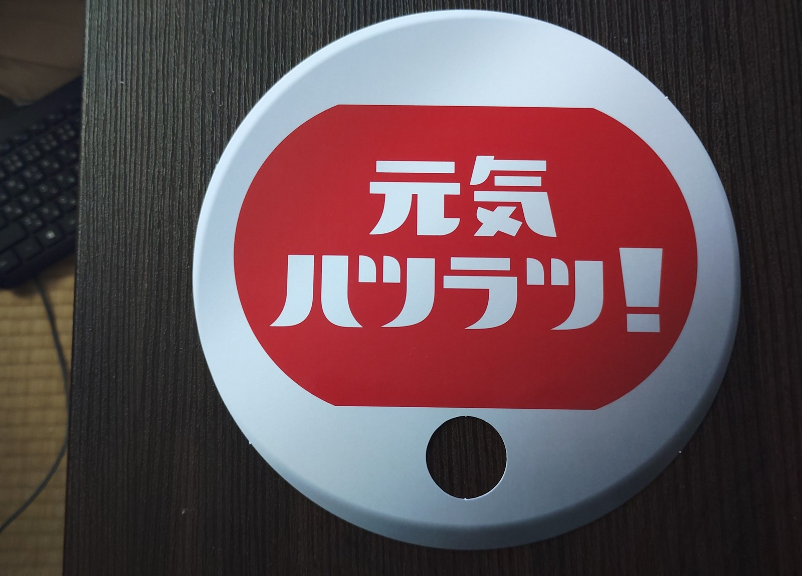
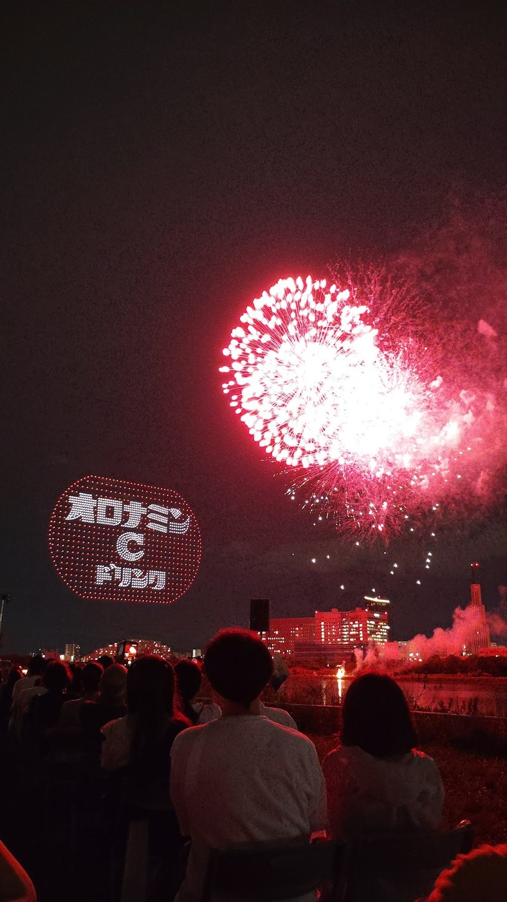
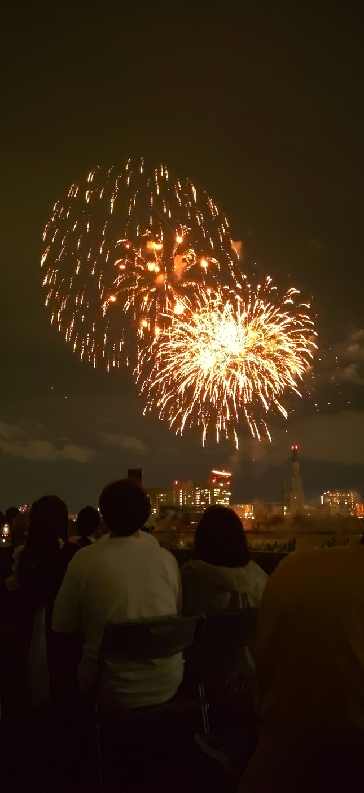

第5回 水都くらわんか花火大会の概要
大会全体は15時から20時まで。花火の打ち上げ数は、枚方市・高槻市・交野市で前年に生まれた4,777人の子どもの数に、100発の追悼花火を加えた4,877発です。数字そのものに地域の一年が刻まれているところも、この大会ならではだと感じました。
ドローンが夜空に描いた大きな光
僕が見ていたのは高槻会場です。花火の前には、約1,300機のドローンと観客の歌声が一つになる、オロナミンC協賛の「元気ハツラツ！大空大合唱2026」が行われました。
うちわを手に、会場みんなで「愛は勝つ」を大合唱
会場で配られたうちわを手に、夜空に浮かぶ歌詞と楽譜を見ながら、観客みんなでKANさんの「愛は勝つ」を歌う参加型の企画です。最初の約20秒の映像には、高槻会場に広がった大合唱の雰囲気も残っています。

オロナミンCのメッセージも夜空に
会場では、オロナミンCの名前と「元気ハツラツ！」の文字をドローンで描き、その横で花火が開く演出もありました。協賛企業のメッセージを夜空全体で見せる、印象に残る場面です。

※当ブログへの広告依頼による掲載ではなく、会場で撮影した協賛演出の記録です。
黄金色の花火が視界いっぱいに広がる
暗い夜空を大きく使った花火は、静止画で見ても迫力があります。光が幾重にも重なる瞬間は、現地で見上げたときの広がりが特に印象的でした。

大玉が夜空を埋める瞬間
大きな花火が何度も開き、音楽の盛り上がりと重なる場面です。元の長い映像から、ピントが合っている大玉の約22秒だけを切り出しました。
終盤の連続打ち上げを動画で
終盤は光の密度が一気に高まりました。長い映像のうちピントが甘い部分は使わず、見やすい映像だけを掲載しています。
次回行くなら知っておきたいこと
- 会場には駐車場がなく、公式は公共交通機関での来場を案内しています。
- 枚方会場は京阪枚方市駅から通常徒歩約15分ですが、17時以降は混雑で1時間ほどかかる場合があります。
- 有料観覧席や開催内容は年によって変わるため、次回は必ず公式サイトの最新案内を確認してください。
ろぶーの結論
水都くらわんか花火大会は、花火の迫力だけでなく、ドローンショーと地域の思いが重なった夜でした。4,877という打ち上げ数の意味を知ると、同じ光景も少し違って見えてきます。今回は自分で撮影した映像を中心に、現地の空気をできるだけそのまま残しました。
※本記事には広告リンクが含まれます。
これから開催される花火大会を探す
秋以降の花火大会やイベントの有料席は、チケットぴあでも探せます。販売状況や開催条件は各公演ページで確認してください。
チケットぴあでイベントを探す公式情報
本稿は2026年9月22日時点の公開情報をもとにしています。画像・動画は公開用コピーを使用し、位置情報、撮影日時、端末情報を削除しています。動画には会場で流れていた音楽と環境音が含まれます。